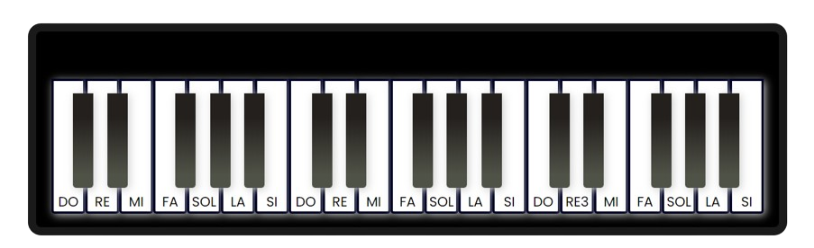
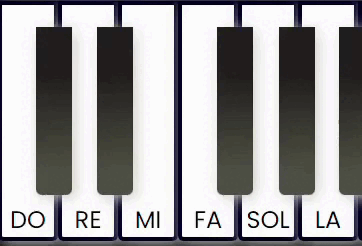
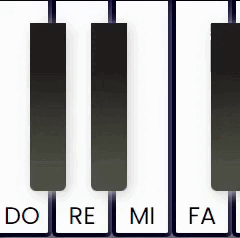
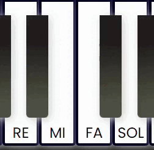
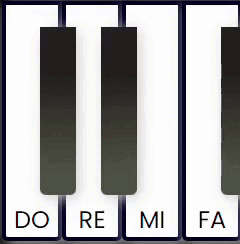

Bem-vindo ao seu piano, aqui você irá aprender a tocar a melodia de uma música simples usando as teclas do teclado do seu Computador ou Notebook. Preparado para essa aventura?!
HARMONICAMENTE
Olá, Jacson
TECLAS DO PIANO VIRTUAL
Neste primeiro tópico, vamos explicar como
as teclas do piano virtual correspondem às
teclas do seu notebook/computador. As teclas
brancas representam as notas musicais de Dó a Si,
enquanto as teclas pretas são usadas para notas
alteradas. Aqui está a correspondência:
Teclas Brancas: U, I, O, P, A, S, D, F, G, H, J, K, L, Ç, Z, X, C, V, B, N, M
Teclas Pretas: 1, 2, 3, 4, 5, 6, 7, 8, 9, 0, Q, W, E, R, T

PRIMEIRA PARTE
Nessa primeira parte da música iremos tocar a nota DÓ, SOL, LÁ duas vezes e finalizar novamente com SOL, também duas vezes.


SEGUNDA PARTE
Dando continuidade, iremos para a segunda parte da música. Dessa vez iremos tocar as notas FÁ, MI, RÉ duas vezes e finalizar com DÓ, apenas uma vezes.
TERCEIRA PARTE
Agora iremos para a terceira parte da música. Dessa vez iremos tocar as notas SOL, FÁ MI, duas vezes e finalizar com RÉ, apenas uma vezes.

QUARTA PARTE
Nessa parte da música iremos tocar a nota DÓ, SOL, LÁ duas vezes e finalizar novamente com SOL, também duas vezes.
ÚLTIMA PARTE
Na última parte da música iremos tocar a nota FÁ, MI, RÉ duas vezes e finalizar DÓ, apenas uma vez.

Parabéns por ter chegado ao final do tutorial, espero que tenha gostado e aprendido muito. Abaixo você encontrará um video que irá te ajudar a tocar a musica aprendida. Boa sorte e boa jornada, caro músico!